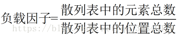
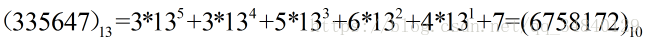
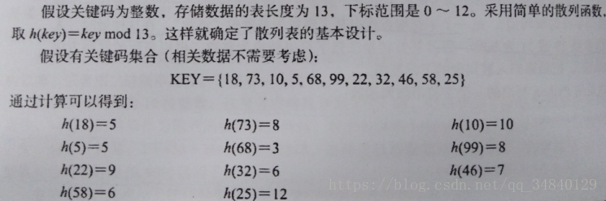
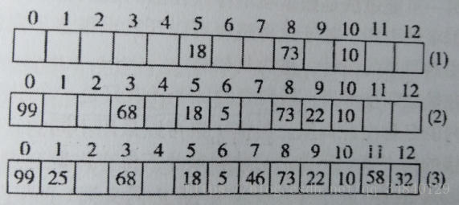

2020-08-07
23
哈希表--知识点整理
哈希表
哈希表的基本概念
哈希表，也叫散列表，它是基于快速存取的角度设计的，是一种典型的“空间换时间”的做法。哈希表是普通数组的一种推广，因为数组可以直接寻址，故可在O(1)时间内访问数组的任意元素，其中它的插入和删除的时间复杂度也是O(1)。 哈希表是根据关键字（Key Value）而直接进行访问的数据结构。也就是说，它将关键字通过某种规则映射到数组中的某个位置，以加快查找的速度。这个映射规则称为哈希函数（散列函数），存放记录的数组称为哈希表。哈希表建立了关键字和存储地址之间的一种直接映射关系。 若多个不同的关键字通过哈希函数计算得到相同的数组下标，称其发生了冲突，这些发生冲突的不同关键字称为同义词。一方面，设计好的HASH函数应尽量减少这这样的冲突；另一方面，由于这样的冲突总是不可避免的，所以还要设计好处理冲突的方法。
散列函数（哈希函数）给元素与存储位置建立一个确定的对应关系，是一种大集合到小集合的映射。这种映射肯定会出现不同的关键码被映射到同一个位置的情况，称为冲突。关于冲突有一个重要的度量值：负载因子。  负载因子越大，出现冲突的可能性就越大。扩大散列表的存储空间，就可以降低负载因子；但是负载因子过小，就会造成散列表中的空间浪费。用散列技术实现字典，需解决两个大问题：散列函数的设计，冲突消解机制。
1、常用的散列函数：
除余法（适用于整数关键码）用关键码除以某个不大于散列表长度m的整数p，将得到的余数（或者余数加L，由下标开始值确定）作为散列地址。 为了存储管理方便，经常将m取为2的某个幂值，p取为小于m的 最大素数（质数）。 除余法在实际中应用最为广泛。
基数转换法（适用于整数或字符关键码）对于整数关键码，取一个正整数r，把关键码看做基数为r的r进制数，然后将其转换为十进制或者二进制数。通常r取为素数。 例如：关键码335647，r=13  对于字符关键码，将字符转换为整数（直接用字符的编码值），其基数建议选用素数29或31。通过基数转换法将字符串转换为整数，再用除余法等整数散列方法将结果归入到散列表的下标范围。
2、冲突消解机制：
1）内消解方法：
内消解的基本方法是开地址法，基本想法为：插入数据发生冲突时，设法在基本存储区里另行安排一个位置来插入数据。其安排位置的方式被称为探查方式。
下面是一个双散列探查的例子，取h2（key）=key%5+1:  
如上图所示，前三项的插入没有冲突，当插入关键码5时，发生冲突，探查一次得： ，所以将关键码5插入位置6.接下来的关键码都按照类似的操作，不断插入到表中即可。
，所以将关键码5插入位置6.接下来的关键码都按照类似的操作，不断插入到表中即可。
检索和删除 在开地址法的散列表上检索，过程与插入类似，对于给定的key：
2）外消解方法：
溢出区方法：当插入关键码发生冲突时，将关键码和数据一起存入溢出区。数据在溢出区中顺序排列。 检索和删除时，先找散列位置，如果有数据但是关键码不匹配，则转到溢出区中顺序查找。 随着溢出区中数据的增长，字典的性能将趋于线性。
桶散列：拉链法：散列表中的每个元素只是一个引用域，这个引用域指向一个存储链表，当不同的关键码发生冲突时，就将关键码插入到当前散列地址对应的链表中(新数据插入到链表的最前端）
Comments

回复

回复

回复

回复